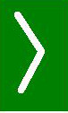
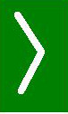

Time to look at mirror What is the picture I reflect to my neighbours. Auka katsoa peiliin, minkä kuvan Jeesuksesta minä annan ympäristölleni. http://www.atheistmemebase.com/2013/08/13/lets-help-jesus/


 
